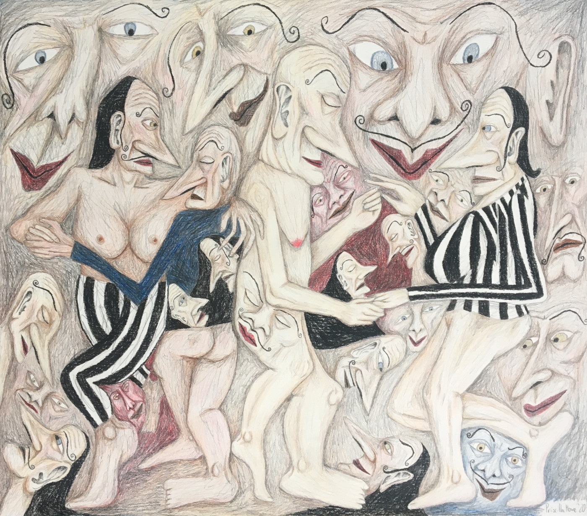

Priscilla Rose Howe is an artist, writer and designer currently residing in Otautahi, Aotearoa. Her drawing practice places queer bodies within surreal and phenomenological realms that exist outside the current climate. Inspired by the fluidity of film as a way to open up or create supernatural worlds, Howe’s artworks often depict reimagined spaces and otherworldly scenes. Rendered in pencil and coloured pencil, her artworks have a childlike, imaginative quality that is at once uncanny and magical.
Looping refers to journeys through unknown waters, the threads that we use to haul ourselves forward. Celebrating tactility and the connections generated through engagement, the exhibition includes woven sculptures, hair pins, drawings and a plushie. Looping is a verb that knots, tangles and binds.
Read the text by Hana Pera Aoake.
Art Fair
Priscilla Rose Howe 02 March 2021 -- 06 March 2021

Into the Moonlight, 2020, Coloured pencil and graphite on paper, 560 x 500 mm
Show Documentation
![[WetGreen, Artfair]](gallery/Priscilla-Rose-Howe,Soirée.jpg)
Bio
Priscilla Rose Howe (b. 1994) Howe holds a Bachelor of Visual Communication Design from Massey University (First Class Hons) and was a finalist at the New Zealand Best Design Awards. She has exhibited at galleries including Satchi & Satchi & Satchi, MEANWHILE and SoFA. A frequent contributor at Art Beat, she has also written for HAMSTER, Femisphere and CIRCUIT Artist Film and Video Aotearoa.